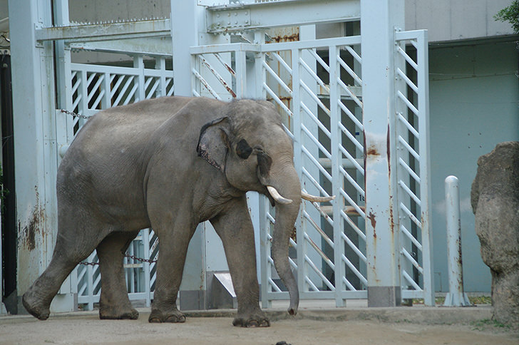

| ゾウとは |
アジアゾウとアフリカゾウ、それとおそらくはマルミミゾウの、2属3種が現生し、現生最大の陸生哺乳類とされています。
日本にはゾウがいないにもかかわらず、『日本書紀』では象牙を「きさのき」と呼んでいました。
ゾウ類は人間の狩り対象で、先史時代からナウマンゾウやマンモスといったゾウ類が重要な獲物とされていました。 |
| アンサー① |
長い鼻と（ 大きな耳 ）が特徴です。首が太く、立ったままでは口を地面に付けることができません。 |
|
|
膝をついてしゃがむか、筋肉質の長い鼻を使って食べ物や水などを口に運びます。
|
| アンサー② |
鼻は（ 上唇と鼻 ）に相当する部分が発達したもので、モノを器用につかむことができます。 |
|
|
仁丹のような小さな物から、豆腐といったつかみにくい物までを器用につかむことができます。
|
| アンサー③ |
巨大なため襲われることは少ないですが、（ ライオンやトラ ）が幼獣を襲うこともあります。 |
|
|
そのため、群れの成獣たちは常に幼獣の周囲を取り囲んで、これらの敵から身を守っています。
40km/h程度で歩くことができますが、ウマのように足を浮かせて走ることはできません。
|
| アンサー④ |
メスの妊娠期間は（ 22ヵ月 ）で、2～4年ごとに子供を一頭産みます。 |
|
|
哺乳動物の中で最も妊娠期間が長いとされています。子ゾウの出生時の体重は約100キロ、身長は約90センチです。
|
| アンサー⑤ |
（ 認知能力 ）が高く、優しく接した人間に甘えて挨拶することもあります。 |
|
|
逆に、自らや仲間に危害を加えた人物に対しては非常に攻撃的な行動をします。
群れの仲間が死んだ場合に葬式ともとれる行動をとるなど、優れた記憶力や知能を持つと推察されています。
|
| アンサー⑥ |
ゾウの（ 長い牙 ）は古来より宝石や工芸材料として珍重されてきました。 |
|
|
牙は象牙として珍重されており、現代では密猟の対象となります。
牙は第2切歯が巨大化したもので、オスのアフリカゾウでは牙の長さが3.5mにまで達することもあります。
|